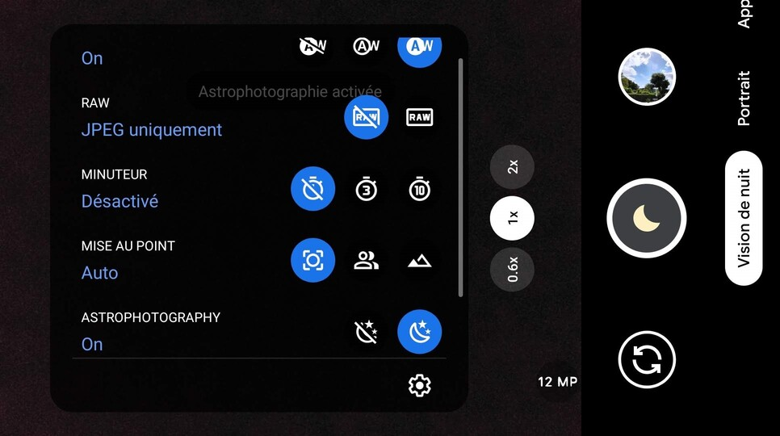

J’ai commencé l’astrophotographie en 2019. Au début, je me contentais de mettre mon téléphone sur trépied et de faire une exposition de 30 secondes. Mais au fur et à mesure des clichés, j’ai commencé à les éditer et ceci avec Photoshop Express. Cela fit une grosse différence entre le avant/après car il y avait un plus gros contraste entre le premier et le second plan ainsi que les hautes et basses lumières. Puis vers février 2020, j’ai commencé à photographier la lune avec mon télescope. Ces premières images étaient floues car ce dernier n’était pas stable et ne permettait pas de faire la mise au point précisément.


Mon expérience
Au tout début
Découvertes qui ont changé ma façon de lever les yeux au ciel
Qu’est-ce que j’entends par cela ? c’est simple. Si un objet ou logiciel m’a permis de faire de meilleures photos, il figurera ici.
En tout premier, le trépied, cela parait un peu simple comme découverte mais au début, j’appuyant mon téléphone contre quelque chose pour le faire tenir. Passer au trépied permet de mieux viser et au passage d'apprendre à reconnaitre les constellations.
Puis est venu la Gcam. Cette dernière est un logiciel venant des Google Pixel et possède un mode astrophotographie dédié et non un mode pro. Ce mode va capturer des photos du ciel nocturne pendant 4-5 minutes avant de les superposer afin de faire ressortir les étoiles et galaxies. La Gcam est disponible sur le site de XDA mais n’est pas compatible avec tous les smartphones (installez à vos propres risques).
Ensuite, en 2020, le ciel commença à être répétitif à photographier et j’ai donc commencé la photo des planètes. Prendre des photos au télescope change beaucoup de choses tel que le fait que l’on ne peut plus faire de longues expositions sans tracking et qu’il faut viser l’astre avec beaucoup de précision.

Voici l'interface de la Gcam